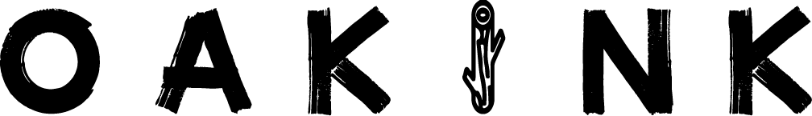
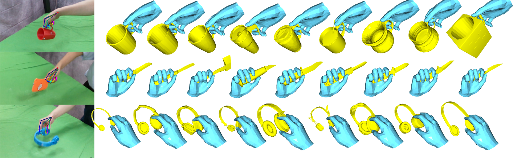

OakInk: A Large-scale Knowledge Repository for Understanding Hand-Object Interaction
News
| Jun 28, 2022 |
OakInk version 2 (public) has been released. We release oakink toolkit -- a Python package that provides data loading and visualization. |
|---|---|
| Mar 03, 2022 | OakInk has been accepted by CVPR 2022. |
Abstract
Learning how humans manipulate objects requires machines to acquire knowledge from two perspectives: one for understanding object affordances and the other for learning human's interactions based on the affordances. Even though these two knowledge bases are crucial, we find that current databases lack a comprehensive awareness of them.
In this work, we propose a multi-modal and rich-annotated knowledge repository, oakink, for visual and cognitive understanding of hand-object interactions. We start to collect 1,800 common household objects and annotate their affordances to construct the first knowledge base: oak. Given the affordance, we record rich human interactions with 100 selected objects in oak. Finally, we transfer the interactions on the 100 recorded objects to their virtual counterparts through a novel method: tink. The recorded and transferred hand-object interactions constitute the second knowledge base: ink. As a result, oakink contains 50,000 distinct affordance-aware and intent-oriented hand-object interactions.

Downloads
Download from Dropbox.
OakInk-Image -- image-based subset.
- Download the image sequences. We divided the image data into 11 parts (10G each).
- oakink_image_v2.zip (10G)
- oakink_image_v2.z01 (10G)
- oakink_image_v2.z02 (10G)
- oakink_image_v2.z03 (10G)
- oakink_image_v2.z04 (10G)
- oakink_image_v2.z05 (10G)
- oakink_image_v2.z06 (10G)
- oakink_image_v2.z07 (10G)
- oakink_image_v2.z08 (10G)
- oakink_image_v2.z09 (10G)
- oakink_image_v2.z10 (10G)
- The object models used in OakInk-image: obj.zip (7.2M)
- Hand & object pose annotations for OakInk-image: anno.zip (3.4G)
OakInk-Shape -- shape-based subset.
- Meta files for managing object' attributes: metaV2.zip
- All interacting hand parameters (pose, shape, root) in ink base: oakink_shape_v2.zip (46M)
- All the real object models ink base: OakInkObjectsV2.zip (1G)
- All the virtual object models ink base: OakInkVirtualObjectsV2.zip (1G)
├── image
│ ├── anno.zip
│ ├── obj.zip
│ └── stream_zipped
│ ├── oakink_image_v2.z01
│ ├── ...
│ ├── oakink_image_v2.z10
│ └── oakink_image_v2.zip
└── shape
├── metaV2.zip
├── OakInkObjectsV2.zip
├── oakink_shape_v2.zip
└── OakInkVirtualObjectsV2.zip
Code

|
OakInk
Toolkit --
A Python package that provides data loading and visualization for the OakInk dataset.
Tink -- For transferring hand pose from source object to target objects. (TODO) |
|---|
Citation
If you find OakInk dataset and oikit useful for your research, please considering cite us:
@InProceedings{YangCVPR2022OakInk,
author = {Yang, Lixin and Li, Kailin and Zhan, Xinyu and Wu, Fei and Xu, Anran and Liu, Liu and Lu, Cewu},
title = {{OakInk}: A Large-Scale Knowledge Repository for Understanding Hand-Object Interaction},
booktitle = {IEEE/CVF Conference on Computer Vision and Pattern Recognition (CVPR)},
year = {2022},
}
Contact
For further information, please contact siriusyang[at]sjtu[dot]edu[dot]cn